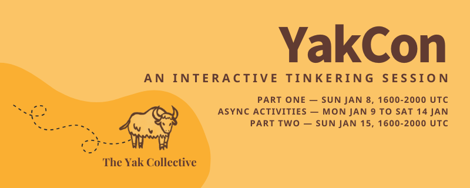
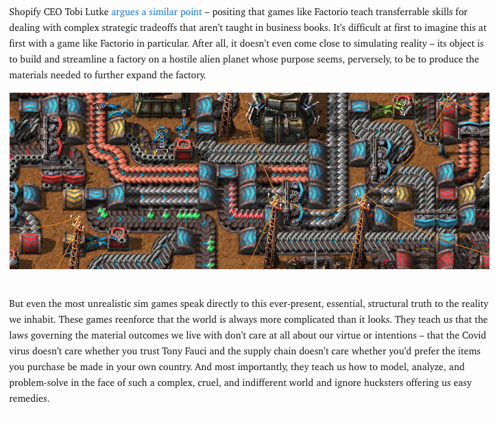

Check out @HiredThought's new post, "Your Ideal January 1st". https://hiredthought.com/2023/01/02/your-ideal-january-1st/
Check out @randylubin's new post, "Gaming Like It’s 1927". https://blog.randylubin.com/gaming-like-it-s-1927
Check out @randylubin's new post, "2022 Recap". https://blog.randylubin.com/2022-recap
Check out the latest edition of the Yak Talk newsletter, "Come join us at YakCon". https://yakcollective.substack.com/p/come-join-us-at-yakcon
Next week, the Yak Collective is doing the first YakCon: an interactive tinkering session. Two virtual meetups on consecutive Sundays (the 8th and 15th) book-ending a week of tinkering and exploration on our various activity tracks.

Replying to @yak_collective
You can register here (the event is free): https://lu.ma/yakcon
The two bookend synchronous sessions will be 1600-2000 UTC (morning in the US, afternoons in Europe, late evening/night in Asia). In between there will be curated activities on our Discord.
Replying to @yak_collective
You can learn more here: https://yakcollective.substack.com/p/come-join-us-at-yakcon
Check out @antlerboy's new post, "There’s a problem with #AdaptiveLeadership.". https://antlerboy.medium.com/theres-a-problem-with-adaptiveleadership-de47e1a93039?source=rss-97852f5a56ae------2
Check out @vaughn_tan's new newsletter, "Thinking together about not-knowing.". https://uncertaintymindset.substack.com/p/thinking-together-about-not-knowing
Check out @sachinb91's new post, "#20 Dating Advice For Men". https://summerlightning.substack.com/p/20-dating-advice-for-men
Check out @vgr's new newsletter, "Logics of Caring". https://studio.ribbonfarm.com/p/logics-of-caring
YakCon nears.
It's a week-long interactive tinkering session hosted by the Yak Collective, with two virtual meetups (on Sunday 8th and 15th Jan) joined by a week of asynchronous activities (curated by volunteer track leads) on our Discord.
Replying to @yak_collective
You can register for it here: https://lu.ma/yakcon
(And you probably should; it's approaching max viable capacity)
Replying to @yak_collective
Or you can stick around and learn more about what YakCon Part One, YakCon Part Two and the spanning Async Week actually involve...
Replying to @yak_collective
The plan for YakCon Part One and Two?
Both sessions will begin with a quick introduction to the Yak Collective and either a quick review of 2022 (Part One) or a quick preview of 2023 (Part Two). This will be followed by our guest speakers.
Replying to @yak_collective
In Part One, @kilianbutler will give us some insight into productising machine learning research.
He knows a little (actually, a lot) about this; he's Head of Product at Papercup. They're working on rapid automated dubbing that preserves the expressivity of the original content.
Replying to @kilianbutler
In Part Two, we'll be hearing from @mcaseyjr and @DanGrover.
Replying to @kilianbutler, @mcaseyjr, @DanGrover and @mcaseyjr
will be tackling a difficult question: "Can Crypto Close the $4 Trillion SME Financing Gap?"
He specialises in investment and entrepreneurship in complex markets facing capital scarcity — whether that's by geography (think Africa) or vertical (think life sciences).
Replying to @kilianbutler, @mcaseyjr and @DanGrover
@DanGrover—designer, engineer, entrepreneur—will be exploring the possibility that simulation games might be what the world needs right now.
Replying to @kilianbutler, @mcaseyjr and @DanGrover
Once the speakers have spoke (and fielded some challenging questions), we can get into the actual activities of YC. The infinite games currently being played by @yak_collective.
Replying to @kilianbutler, @mcaseyjr and @DanGrover
We'll take a brief tour through:
- Rover building and distributed systems studies
- The Fermi Gym
- Governance studies
- Infrastructure activities
- YC's pop-up consulting projects
- YakFit
Some other nascent activities will probably get a namedrop, too.
Replying to @kilianbutler, @mcaseyjr and @DanGrover
In Part One, this round robin will be more focused on recent activity. In Part Two, there'll be a little more focus on upcoming activities and possibilities.
Replying to @kilianbutler, @mcaseyjr and @DanGrover
With the all-hands ticked off, the breakouts begin.
In these, you'll be able to participate in a session based on some recurring YC activities:
- The Fermi Gym OR robotics and distributed systems studies (Breakout A)
- Infrastructure OR governance studies (Breakout B)
Replying to @kilianbutler, @mcaseyjr and @DanGrover
Breakouts in Part One lay the groundwork for things taking place during Async Week.
"Async Week" is a fancy name for asynchronous activities (curated by volunteer track leads) on our Discord.
Breakouts in Part Two will bring together the efforts from Part One and Async Week.
Replying to @kilianbutler, @mcaseyjr and @DanGrover
The end of the breakout sessions marks the end of the event for the day. To close, there may be a few comments, some questions or even a discussion.
Replying to @kilianbutler, @mcaseyjr and @DanGrover
And we can neither confirm nor deny the existence of a secret afterparty.
Replying to @kilianbutler, @mcaseyjr and @DanGrover
YakCon sounds great, right? Register for it here: https://lu.ma/yakcon

YaKCon Part One is kicking off in 45 minutes.
ICYMI: it's a week-long interactive tinkering session hosted by the Yak Collective, with two virtual meetups (today and next Sunday) joined by a week of asynchronous activities (curated by volunteer track leads) on our Discord.
Replying to @yak_collective
Head here to register for it: http://lu.ma/yakcon.
Replying to @yak_collective
And head to the link below to get access to the YC Discord, the place for live event comments, discussion, questions, as well as activities during Async Week.
https://www.yakcollective.org/join.html
Replying to @yak_collective
The curious among you can check out the agenda for the sessions here: https://twitter.com/yak_collective/status/1611644634471567362
Kicking off YakCon, we have Killian Butler talking about productizing ML research.
Intros to breakout sessions wrapping up now... we'll kick off with fermi gym and distributed systems/robotics breakout groups, and then move on to governance studies and infrastructure breakouts. Each is a hands-on activity.
Just wrapped first pair of YakCon breakout sessions. Played a little distributed robotics paper game in one session, and solved some fermi estimation problems in the other. Now in second set: infrastructure group and governance group.
And that's a wrap for Part 1 of YakCon, a Good Time was had by all. We now head into a week of asychronous activities on our Discord, followed by another Sunday session next week.
Schedule for week (all times UTC):
Mon, 1600: Distributed Systems discusses cache coherence
Tue, 2000: Rover group discusses SLAM in Unity
Thu, 1600: @necopinus infrastructure office hour
Fri, 1700: Governance group chat on rules
All week: Fermi gym problems, YakFit chat
Check out @sachinb91's new post, "#21 Fast Cars Save Friendships". https://summerlightning.substack.com/p/21-fast-cars-save-friendships
Check out @p_millerd's new post, "Leaning Into Ambition & Deeper Commitments: (Still) Enjoying The Journey in 2022". https://think-boundless.com/2022-annual-review/?utm_source=rss&utm_medium=rss&utm_campaign=2022-annual-review
YakCon: Part 1 review, Part 2 preview. If you missed it, you can catch up here, and still sneak in for Part 2. https://yakcollective.substack.com/p/yakcon-part-1-review-part-2-preview?sd=pf
Check out the latest edition of the Yak Talk newsletter, "YakCon Part 1 Review, Part 2 Preview". https://yakcollective.substack.com/p/yakcon-part-1-review-part-2-preview
Yak Rover weekly meeting, discussing SLAM navigation in Unity game engine today.
Check out @antlerboy's new post, "What haunts your fever dreams?". https://antlerboy.medium.com/what-haunts-your-fever-dreams-9aefa653060d?source=rss-97852f5a56ae------2
Check out @vaughn_tan's new newsletter, "Introducing not-knowing.". https://uncertaintymindset.substack.com/p/introducing-not-knowing
Check out @tomcritchlow's new post, "Building a New Project in Public". https://tomcritchlow.com/2023/01/11/figma-knowledge-workers/
Check out @sachinb91's new post, "#22 Are these vibes in the room with us right now?". https://summerlightning.substack.com/p/22-are-these-vibes-in-the-room-with
Check out @evanwolf's new post, "Identity of Things: verifiable credentials are safer for IoT systems". https://wider.team/2023/01/12/mapped-oauth-and-verifiable-credentials-for-iot/
Check out @anthilemoon's new post, "Change fatigue: When our brain’s adaptive capacity is depleted". https://nesslabs.com/change-fatigue?utm_source=rss&utm_medium=rss&utm_campaign=change-fatigue
Check out @anthilemoon's new post, "Eliminating the productivity paradox with Tariq Rauf, founder and CEO of Qatalog". https://nesslabs.com/qatalog-featured-tool?utm_source=rss&utm_medium=rss&utm_campaign=qatalog-featured-tool
Check out @sachinb91's new post, "#23 Bible Belt Blues ". https://summerlightning.substack.com/p/23-bible-belt-blues
Part One and Async Week make up two thirds of YakCon, our week-long interactive tinkering session. Tomorrow's Part Two (1600-2000 UTC) concludes the event.
Replying to @yak_collective
For Part One we had around thirty participants (+/- 5) for the full session, inc. a mixture of active and inactive Yaks and newcomers. General consensus: everyone enjoyed themselves.
Replying to @yak_collective
The talk that @kilianbutler gave to kick the session off was focused on productising machine learning research. You can check it out on our YouTube channel here: https://www.youtube.com/watch?v=Zl1-zt0zQ28
Replying to @kilianbutler
Then—after whirlwind tours of YC activity in 2022—we got into two rounds of breakouts.
Replying to @kilianbutler
The first breakout gave participants two choices:
- Enter the Fermi Gym and attempt a roughly-right answer to a sensor-focused problem
- Orient themselves in the terrain of distributed robotics via a pebble automata puzzle
Replying to @kilianbutler
The second breakout gave participants another choice:
- Read an essay on rules and discuss their common invocations (as models, as algorithms, as laws)
- Receive an introduction to YC's infrastructure and ideate opportunities for expansion, improvement and experimentation
Replying to @kilianbutler
Spanning the gap between last week's Part One and tomorrow's Part Two was Async Week, which saw a smattering of activity on the YC Discord. This included reading drops, the regular recurring sync sessions and dialogues in different channels.
Replying to @kilianbutler
Part Two will utilise the same essential structure as Part One:
- Guest speakers
- All-hands intro to YC and 2023 activity previews
- Two rounds of breakouts (Fermi Gym or distributed robotics; governance or infrastructure)
Replying to @kilianbutler
The difference will be in our guest speakers. For Part Two we have, rather appropriately, two speakers.
Replying to @kilianbutler and @mcaseyjr
will be tackling the difficult question: "Can Crypto Close the $4 Trillion SME Financing Gap?"
Replying to @kilianbutler, @mcaseyjr and @mcaseyjr
specialises in investment and entrepreneurship in complex markets facing capital scarcity — whether that's by geography (think Africa) or vertical (think life sciences). It's an interesting playspace to be in.
Replying to @kilianbutler and @mcaseyjr
For example, in the linked piece he highlighted four dynamics shaping global private markets today.
https://porticoadvisers.com/2022/09/14/four-dynamics/
Replying to @kilianbutler and @mcaseyjr
...the dynamics:
- Primary fundraising is extremely challenging
- Consolidation is transforming the strategic landscape
- The difficult macro environment is necessitating novel liquidity solutions
- Crypto is emerging as an institutional asset class
Replying to @kilianbutler and @mcaseyjr
@mcaseyjr'll be providing some insight into how these dynamics—and others—are unfolding and the impact they're having.
Replying to @kilianbutler and @mcaseyjr
Our second speaker is @DanGrover. He'll be expanding upon and contextualising his essay, Simulation Games Might Be What The World Needs Now.
http://dangrover.com/blog/2022/09/24/sim-games.html.
Replying to @kilianbutler, @mcaseyjr and @DanGrover
SPOILER ALERT: a screenshot of my favourite snippet from the essay.

Replying to @kilianbutler, @mcaseyjr and @DanGrover
And that's just the speakers.
YakCon Part Two is shaping up to be as fun as Part One. Come and join the party.
Register for Part Two here: https://lu.ma/yakcon
Replying to @kilianbutler, @mcaseyjr and @DanGrover
And don't forget to join the YC Discord beforehand: https://www.yakcollective.org/join.html
That'll be where all the fun peri-event dialogue happens.
Check out @vgr's new newsletter, "The Permaweird". https://studio.ribbonfarm.com/p/the-permaweird
Check out the latest edition of the Yak Talk newsletter, "YakCon Part 2". https://yakcollective.substack.com/p/yakcon-part-2
YakCon Part 2 now underway. Mike Casey talking about using crypto to close the 4T SME financing gap
YakCon: Now Dan Grover talking about simulation games
Check out @p_millerd's new post, "Find The Others Community". https://think-boundless.com/find-the-others-community/?utm_source=rss&utm_medium=rss&utm_campaign=find-the-others-community
Check out @evanwolf's new post, "What if your identity ecosystem caused pollution? ". https://wider.team/2023/01/17/what-if-your-identity-ecosystem-caused-pollution/
Check out @antlerboy's new post, "The problem with consulting". https://antlerboy.medium.com/the-problem-with-consulting-99b5ae083cf?source=rss-97852f5a56ae------2
Check out @vaughn_tan's new newsletter, "Meaning-making makes us human (for now).". https://uncertaintymindset.substack.com/p/meaning-making-makes-us-human-for
Check out @sachinb91's new post, "#24 Jacket Lore". https://summerlightning.substack.com/p/24-jacket-lore
Check out @anthilemoon's new post, "Reinventing the digital assistant with George Levin, founder of Hints". https://nesslabs.com/hints-featured-tool-2?utm_source=rss&utm_medium=rss&utm_campaign=hints-featured-tool-2
Check out @anthilemoon's new post, "The Paradox of Goals". https://nesslabs.com/the-paradox-of-goals?utm_source=rss&utm_medium=rss&utm_campaign=the-paradox-of-goals
Check out @tomcritchlow's new post, "Digital Bricolage & Web Foraging". https://tomcritchlow.com/2023/01/20/digital-bricolage/
Check out @vgr's new newsletter, "Disturbed Realities". https://studio.ribbonfarm.com/p/disturbed-realities
Videos of each of the three talks from YakCon are now out.
Replying to @yak_collective
First up: @kilianbutler's talk on productising machine learning research. https://www.youtube.com/watch?v=Zl1-zt0zQ28&list=PLrJaiS43TxmZurvvz0ntOHRxALV6td6xz&index=1
Replying to @kilianbutler
Second: @DanGrover's Simulation Games Might Be What the World Needs Now. https://www.youtube.com/watch?v=JZhn2hwhSYs
Replying to @kilianbutler and @DanGrover
Finally: @mcaseyjr's Can Crypto Close the $4 Trillion SME Financing Gap? https://www.youtube.com/watch?v=MuroVDNtpJg
Check out @HiredThought's new post, "Things I do when I start a consulting project.". https://hiredthought.com/2023/01/23/things-i-do-when-i-start-a-consulting-project/
Check out @randylubin's new post, "Near future worldbuilding with Dungeon23". https://blog.randylubin.com/near-future-worldbuilding-with-dungeon23
Check out @evanwolf's new post, "Wider Team had a verifiable 2022". https://wider.team/2023/01/24/wider-team-had-a-verifiable-2022/
Check out @sachinb91's new post, "#25 Sauna Zeitgeist ". https://summerlightning.substack.com/p/25-sauna-zeitgeist
Check out @antlerboy's new post, "I am in dispute with Hunter Boots". https://antlerboy.medium.com/i-am-in-dispute-with-hunter-boots-3c7207f58d43?source=rss-97852f5a56ae------2
Check out @anthilemoon's new post, "Thinking Beyond the Brain: Why Neuroplasticity is Overhyped". https://nesslabs.com/neuroplasticity?utm_source=rss&utm_medium=rss&utm_campaign=neuroplasticity
Check out @anthilemoon's new post, "Free your notes with Laurent Cozic, founder of Joplin". https://nesslabs.com/joplin-featured-tool?utm_source=rss&utm_medium=rss&utm_campaign=joplin-featured-tool
Check out @tomcritchlow's new post, "The Magic of Small Databases". https://tomcritchlow.com/2023/01/27/small-databases/
Check out @sachinb91's new post, "#26 You Are So Money Baby". https://summerlightning.substack.com/p/26-you-are-so-money-baby
Check out @vgr's new newsletter, "Contours of Thawing Time". https://studio.ribbonfarm.com/p/contours-of-thawing-time
Check out @anthilemoon's new post, "Vectors of Action". https://nesslabs.com/vectors-of-action?utm_source=rss&utm_medium=rss&utm_campaign=vectors-of-action
Check out @sachinb91's new post, "Below The Interface". https://summerlightning.substack.com/p/below-the-interface